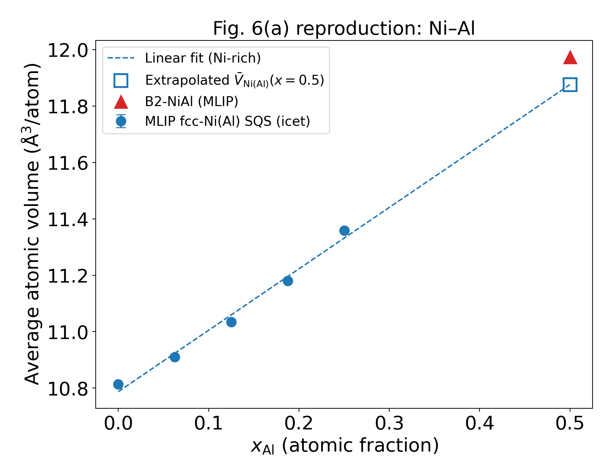
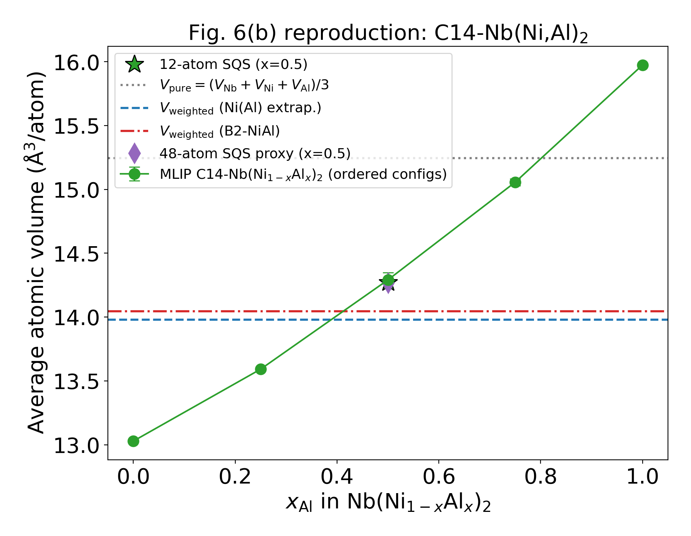
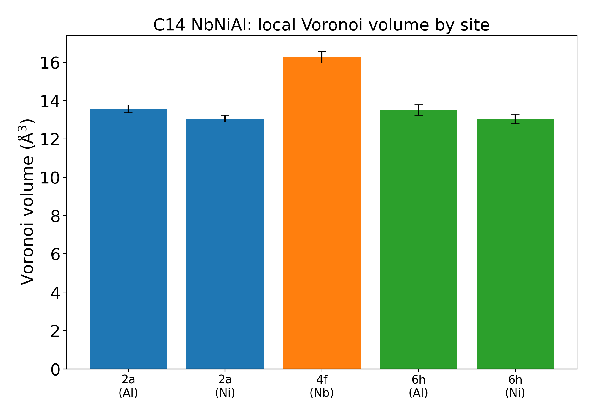

Laves相（AB$_2$型トポロジカル最密充填相）は、Nb基・Ni基耐熱合金の相安定性を左右する代表的な金属間化合物であり、その生成傾向は古くから構成元素の原子サイズ比（理想値 $r_A/r_B \approx 1.225$）で議論されてきた。しかし、多元系合金中の「原子半径」をどう定義するかは自明ではない。純元素の原子半径をそのまま用いると、化合物形成に伴う電荷移動・体積収縮が無視され、相安定性の予測を誤ることがある。
Yamanouchi & Miura (2018) は、Nb–Cr–Ni–Al／Nb–V–Ni–Al系のLaves相安定性を解析するにあたり、純元素の原子体積ではなく、NiAl化合物（B2）やNi(Al)固溶体から導かれる「化合物由来の平均原子体積」を用いるべきだと提案した（同論文Fig. 6）。すなわちC14-Nb(Ni,Al)$_2$の平均原子体積 $V_{\mathrm{C14}}$ は、
$$V_{\mathrm{weighted}} = \frac{V_{\mathrm{Nb}} + 2\,\bar V_{\mathrm{NiAl}}}{3}$$
（$\bar V_{\mathrm{NiAl}}$: Ni–Al化合物・固溶体由来の平均原子体積）で近似され、純元素平均 $V_{\mathrm{pure}} = (V_{\mathrm{Nb}} + V_{\mathrm{Ni}} + V_{\mathrm{Al}})/3$ よりも実測に近い、という主張である。
本研究では、この主張（中心仮説）
$$|V_{\mathrm{C14}} - V_{\mathrm{weighted}}| \;<\; |V_{\mathrm{C14}} - V_{\mathrm{pure}}|$$
を、機械学習原子間ポテンシャル（MLIP）による第一原理精度の全原子計算で独立に検証した。実験格子定数への依存を避け、単一の理論体系（MP-DFT／PBE水準）内で純元素・B2・固溶体・C14 Laves相を一貫して計算できる点が本アプローチの利点である。
| 構造 | a (Å) MLIP | a (Å) 実験 | V/atom (Å$^3$) |
|---|---|---|---|
| fcc-Ni | 3.510 | 3.524 | 10.813 |
| fcc-Al | 4.060 | 4.050 | 16.736 |
| bcc-Nb | 3.313 | 3.301 | 18.186 |
| bcc-Cr | 2.866 | 2.884 | 11.772 |
| bcc-V | 2.998 | 3.024 | 13.478 |
| B2-NiAl | 2.882 | 2.887 | 11.974 |
格子定数誤差は実験比 0.4〜0.9%（受入基準 1% 以下を満足）。
fcc-Ni母相、$x_{\mathrm{Al}} = 0,\ 0.0625,\ 0.125,\ 0.1875,\ 0.25$（各組成2 SQS構成）。
固溶体外挿とB2規則相の平均体積はほぼ一致し、論文のNi–Al平均体積の扱い（固溶体と化合物を同一線上で扱う）を支持する。

| 量 | 値 (Å$^3$/atom) |
|---|---|
| $V_{\mathrm{C14}}$ (x=0.5, 12原子SQS) | 14.270 |
| （参考）x=0.5 規則配置平均 | 14.292 ± 0.057 |
| $V_{\mathrm{weighted}}$（Ni(Al)外挿） | 13.977 |
| $V_{\mathrm{weighted}}$（B2-NiAl） | 14.045 |
| $V_{\mathrm{pure}}$ | 15.245 |
SQSサイズ依存性: 12原子SQS 14.270 → 48原子SQS 14.273 Å$^3$/atom（変化 0.021%、基準0.5%以下）。

| サイト(元素) | $V^{\mathrm{Voro}}$ (Å$^3$) | $r^{\mathrm{Voro}}$ (Å) |
|---|---|---|
| 4f (Nb) | 16.26 ± 0.31 | 1.572 |
| 2a (Al) | 13.58 ± 0.20 | 1.480 |
| 2a (Ni) | 13.07 ± 0.17 | 1.461 |
| 6h (Al) | 13.52 ± 0.27 | 1.478 |
| 6h (Ni) | 13.04 ± 0.26 | 1.460 |

| 元素 | $E_{\mathrm{sub}}^{A(4f)}$ (eV) | $E_{\mathrm{sub}}^{2a}$ (eV) | $E_{\mathrm{sub}}^{6h}$ (eV) | $\Delta E_{A-B}$ (eV) | 優先サイト |
|---|---|---|---|---|---|
| Cr | 0.710 | 0.878 | 0.773 | −0.063 | A (4f) |
| V | 0.545 | 0.806 | 0.602 | −0.057 | A (4f) |
Cr・VともにわずかにAサイト（Nbサイト）を優先するが、$|\Delta E_{A-B}| < 0.07$ eVと小さく、温度・配置エントロピーの影響が支配的になり得る領域。Bサイト内では両者とも6hの方が置換しやすい。
| # | 基準 | 結果 |
|---|---|---|
| 1 | 純元素格子定数誤差1%以下 | ✓ 実験比0.4–0.9% |
| 2 | C14体積のDFT比1%以下 | △ DFT直接比較は未実施（MLIP訓練データがMP-DFT） |
| 3 | SQSサイズ依存0.5%以下 | ✓ 0.021% |
| 4 | SQS構成間標準偏差の報告 | ✓ volumes.csv / summary.json |
| 5 | 置換エネルギーのDFT検証 | △ 未実施（今後の課題） |
| 6 | 2a/6h情報の区別 | ✓ site配列で全構造追跡 |
| 7 | 0 K計算と実験温度の明記 | ✓ 全て0 K静的緩和 |
| 8 | $V_{\mathrm{weighted}}$と$V_{\mathrm{pure}}$の両比較 | ✓ |
| 9 | Fig. 6(a)(b)再現図の出力 | ✓ 06_figures/ |
| 10 | 訓練・検証データの分離 | — 事前学習モデル使用のため非該当 |
laves_fig6/run_fig6_pipeline.py — 全計算パイプラインlaves_fig6/05_analysis/ — volumes.csv / local_environments.csv / site_energies.csv / summary.jsonlaves_fig6/06_figures/ — Fig. 6(a)(b)再現図・サイト体積図laves_fig6/07_reports/fig6_validation_report.md — 詳細報告書（Markdown）laves_fig6/04_relax/*.extxyz — 全36緩和構造